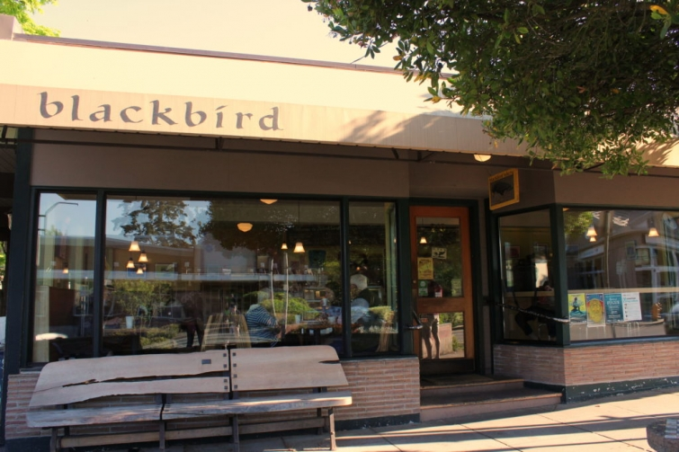
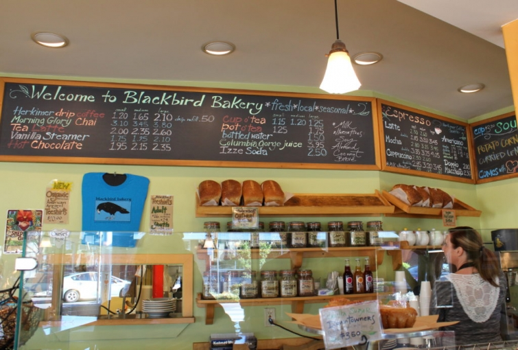

.png)
.PNG)
.PNG)
.PNG)
.PNG)
.PNG)
.JPG)
.JPG)
.PNG)
.PNG)


On our second day of traveling in Washington state, we rose early and took a ferry over to Bainbridge Island from Seattle. The views were beautiful, but the wind was ffffreezing cold! Once outside the car on the island I inhaled, and the strong smell of evergreens was absolutely amazing. (I wish I could put a scratch-and-sniff in this post so you could experience it!) I thought Highlands, NC had the market on that scent, but Bainbridge Island was like 10 times the scent of Highlands! I just kept sniffing and sniffing and sniffing trying to take it in. 🙂
Our first stop was Blackbird Bakery.
We were excited to check it out because we had read so many good reviews of it.
 Just look at all the gorgeous cakes and pies they had on display in that case…
Just look at all the gorgeous cakes and pies they had on display in that case…
And all the muffins and cookies and other treats!
(Are you getting hungry yet?)
Here was our breakfast that morning (for all 3 of us – not just me!) Everything was sooooo good! If you go to Blackbird, be sure to try the Downtowner croissant. It had a caramelized vanilla sugar that was delicious. (We went back 3 times – in one day! 🙂 )
Bakeries must be big business on Bainbridge because right down from Blackbird was Coquette Bakery Cart…
and right around the corner in the other direction was Bainbridge Bakers.
(And I believe there may even be 7 other bakeries on the island!)
There were also a number of cute cute shops there.
Furnish Bainbridge had furniture, accessories, and a good selection of Dash and Albert rugs.
Another pretty shop was Plum, located up on a courtyard deck. They carried home decor items, apparel, and some gift items as well.
If I could give an award for “most charming shop” on the island, it would definitely go to Churchmouse Yarns and Teas. I don’t know how to knit, but I just loved the place!
I even called our daughter at college from there to ask what kind of tea she wanted me to bring her. 🙂
Look! They had Emma Bridgewater pottery!
Wouldn’t all of this just make you want to knit?!
Such beautiful displays.
It is a community place where people can meet, take lessons, or just visit.
(Yes, I loved those black gingham chair cushions. 🙂 )
And wasn’t this a clever way to display those wonderful botanical prints?
Churchmouse is located right behind Blackbird Bakery. Across the street and down a bit is Salt House Mercantile.
I could have spent all my shopping money in there. They had great pillows, table linens, aprons, and tote bags. (Unfortunately, my suitcase had no room in it for much of anything else. 🙁 )
Two doors down from Salt House is Hitchcock Deli, where we stopped for lunch. Hitchcock is supposed to be one of the best restaurants on the island, and Hitchcock Deli is sort of like their little sister deli.
It was very busy at lunch. In fact, there were no tables available so we ending up eating at an outside table across from Churchmouse Yarns.
I ordered a corned beef-on-rye, and I wish I could say that I enjoyed it, but the meat was very very tough. So I definitely would not order it again. My husband and son both had other sandwiches. (One had egg salad, and the other had roast beef.) They both loved theirs, so it was just the corned beef that was the problem. (I even had my husband try out my sandwich, and he agreed that it was not good.)
For dinner we had thought about going to Hitchcock, but we decided to try some place different instead. Cafe Nola is located on the other side of Salt House, and it was right down the street from the inn where we were staying so we walked there for our evening meal. Its French Toast and brunch had been featured on Giada’s Weekend Getaway a number of years ago.
The inside decor was cozy and had a European vibe, but because the weather was so wonderful, we asked to dine in their outside seating area.
My husband’s salmon was quite delicious!
My son and I both ordered the Picadillo Tacos. While the dish was well prepared, and all the accompanying sides were very fresh tasting, neither of us cared for the meat. (It tasted like chili…not what we were expecting in a taco.) Next time, I want to try their beet salad, and my son might get their steak.
Of course no trip to Bainbridge Island would be complete without going to this place…
Mora Iced Creamy.
So after we finished dinner, we walked across the street and down a block for our dessert there.
Soooo many yummy sounding choices
(and they let you sample all you want!)

I had a difficult time choosing between the Espresso Mocha and the Swiss Chocolate.
Swiss Chocolate with its chocolate shavings and swirled dulce de leche won.
It was chocolate heaven. 🙂
Now please don’t think that all we did on Bainbridge Island was eat. (I mean we did do a lot of it, but that wasn’t everything. 🙂 ) Remember, this post was about the dining and shopping there. We did plenty of sightseeing, and that will the topic for the next post. I have been sewing and sewing and sewing for the last few days (drapes for 6 windows!) but I am finally finished with that big project, so hopefully blogging will be back to a little more regular schedule.
See you soon with an inn and some beautiful houses on Bainbridge Island.
Until next time…


.PNG)
Hope you made it down the road to a lovely little town we used to live in…Poulsbo WA. Reading your post I’m amazed how much has changed on Bainbridge. It was a sleepy little town when we left the area in 2002. I loved seeing all the new places and especially the bakeries. Makes me really want to go back for a visit.
I to would love some sort of tutorial for the curtains. Looking forward to see what rooms you made them for.
Oh,I’m so happy for you to get to travel now that you & your husband have retired. Enjoy every minute. Have you seen the retro camping gear in the June issue of Country Living? I know you’ll love it as much as I do. Love the look of 40’s & 50’s style summer cabins & lodges.Think “On Golden Pond”
I don’t really sew but think I could do straight lines! I would love to see detailed instructions, and pictures if possible on making drapes. Will you give us a tutorial on making drapes?
Looking forward to getting over to Bainbridge again soon.
How fun to read about your day on “my” island! My hubby’s office is a block behind Cafe Nola so you sure we’re in our neck of the woods. We live on the north end of the island so I tend to pop over the bridge to Poulsbo often. My sons/families live there so you can understand. 😁
Hi Kelly,
Your post makes me want to plan a trip to see my friend on Bainbridge. I love the island and eating, while important, is the second best thing for me. The homes, if you drive around are so wonderful. I always make my friend take me on a driving home tour.
I’m sorry you had a couple of dud meals, but I’m with you, if I lived on the island I’d definitely take up knitting so that I would have an excuse to visit Churchmouse every week!
xo,
Karen
Kelly,
One thing I liked in Seattle was watching the coming and going of the ferries on the water. All those bakeries and shops in Bainbridge are just so perfect. Love the colorful chalkboard.
This area of the world is just beautiful. When you go back take the high speed ferry to Victoria, BC and go to the Buchart Gardens. I like the story of the gardens, the people who created them. Next time I go I will have to go to Bainbridge. The flowers at Pikes Market are so gorgeous and reasonably priced as I remember.
Thanks again for taking us along with you.
DiAnne
Thanks for sharing all of this Kelly …from the scent of the evergreens as you stepped off the boat …. I feel as though I was actually there with you. I hope you don’t mind!! 🙂 Bainbridge Island seems like my kind of place. So many great places to eat . I can imagine strolling around, wandering in and out of the shops and wishing I had brought an extra suitcase to transport everything home!
Once again, many thanks for all the great photos. Your photographs are so much better than any guide book I’ve bought.
Take care …hope you’re having a great week.
I keep meaning to ask, we’re visiting Disney in October …are we likely to see your daughter or is she working behind the scenes. I hope you don’t mind me asking.
Rosemary
What a fun place to visit! I would love the shops and especially the bakeries!! 😀 Now, I am craving chocolate ice cream! 😉
Love shopping and eating with you! 😉 Less money spent and no calories, but you sure had me drooling! Ha! Love the smell of evergreens, especially when it’s humid. First time I experienced that was in Banff, Alberta. Pure heaven, I too wish I could bottle it and bring it home.
Drapes for six windows – wow, that’s a lot of labor! But if it’s half as hot there as it is here, you may as well be inside doing projects!
Thanks for the visit to Bainbridge!
Kelly,
Thank you for the e-trip. I always enjoying seeing where you go, what you eat and what you do. Thanks for sharing. I cant wait to see what is next.
Thank you for sharing your trip. I have been wanting to go to Seattle for some time and this post may just encourage me to do so. Going to wonderful restaurants is just part of the fun! Glad all your technical computer issues have been solved!
Kelly, although I’ve never thought about visiting some of the places you share, I surely have enjoyed going on your visits with you. Your pictures and comments make me feel as if I am there, and I continue to enjoy the highlights of your trips…wondering if I should add one or two of these places to my bucket list.
I had forgotten that you went to Bainbridge Island, and when I read the title, I wondered if you would mention Churchmouse Yarns. Thank you for the lovely tour of this charming shop. I am a knitter and subscribe to their newsletter, the shop is just as I imagine and more! Oh how I’d love to sit on one of those black & white cushioned chairs, sip tea and knit one of their patterns in a luscious yarn, a girl can dream!
Hi Kelly. Brainbridge Island sounds like a perfect gem, all those bakeries and cute decor shops. I know I would have over indulged.
I could almost smell it…but then, I know that smell. How fun! The shops reminded me of the shops in Highlands. At least that is what I was picturing. Oh, my…all of those bakeries and your meals looked delicious. (Anita, did you see how those botanical prints were displayed???) Anita and I have discussed that, Kelly. (Anita owns the coolest shop ever in Richmond, Virginia called Very Richmond Gifts.) And, Kelly, I bet you would not be surprised to learn that my favorite ice cream is Swiss Chocolate Almond! Can’t wait to hear more about your trip!
My husband and I went to Seattle and Bainbridge island a few years ago. We loved it, too! I remember going into the tea and knitting shop. We ate lunch at a place called Nola’s. Thanks for the memories!
Oh, what a wonderful vacation! I would love to visit there! Would love the ice cream and I want to see the Emma Bridgewater pottery. I hope you bought a piece!
You always find the cutest places to shop! Each one was better than the one before. And those cakes . . . !!! Oh dear. What a great time you must have had.
Fabulous information – I’m adding this for a day trip this summer!
I hope you’ll visit my hometown of Edmonds, WA on one of your visits! Bainbridge is a great town!! Glad you are enjoy the sights, sounds and smells of the Seattle area!